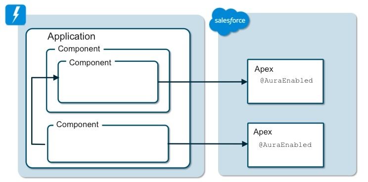
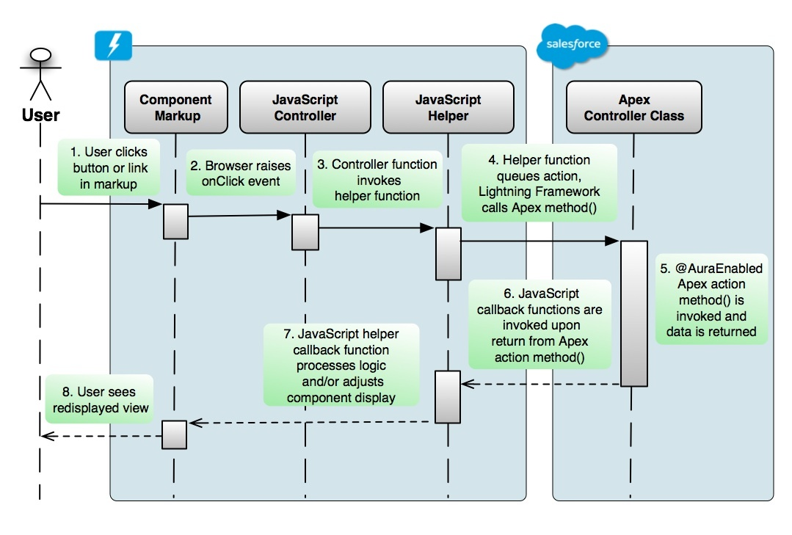
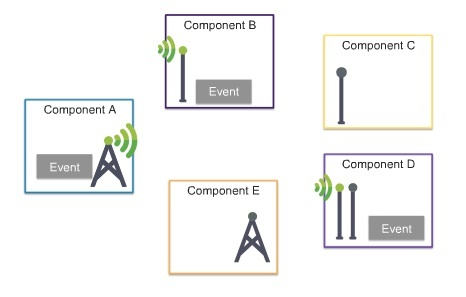

Lightning Architecture
Goals
- Lightning makes it easier to build responsive applications for any device
What is included in Lightning?
- Lightning Component Framework
- Developer Tools
Lightning components
Lightning components give us :
- a client-server framework that accelerates development, as well as app performance,
ideal for use with the Salesforce mobile app and Salesforce Lightning Experience.
The Lightning App Builder
Lightning App Builder empowers us to build apps:
- visually without code
- quicker than ever before using off-the-shelf and custom-built Lightning components.
You can make your Lightning components available in the Lightning App Builder so administrators can build custom user interfaces without code.
Salesforce mobile app and Salesforce Lightning Experience are built with Lightning components.
Benefits of Lightning Component Framework
out-of-the-box set of components
- building an app with components facilitates parallel design, improving overall development efficiency.
- Components are encapsulated and their internals stay private, while their public shape is visible to consumers of the component. This strong separation gives component authors freedom to change the internal implementation details and insulates component consumers from those changes.
event-driven architecture
- for better decoupling between components. Any component can subscribe to an application/component event that they can see.
framework optimized for performance
- Uses a stateful client and stateless server architecture that relies on JavaScript on the client side to manage UI component metadata and application data.
- The client calls the server only when absolutely necessary; for example to get more metadata or data
- The server only sends data that is needed by the user to maximize efficiency.
Component Architecture

Components
Components are the self-contained and reusable units of an app. Components are rendered to produce HTML DOM elements within the browser.
Granularity:
- represent a reusable section of the UI, and can range in granularity from a single line of text to an entire app.
Encapsulation: The details of a component's implementation are encapsulated. This allows the consumer of a component to focus on building their app, while the component author can innovate and make changes without breaking consumers. You configure components by setting the named attributes that they expose in their definition. Components interact with their environment by listening to or publishing events.
Lightning Component Framework includes:
- set of pre-built components
- example: components that come with the Lightning Design System styling are available in the
lightningnamespace. Also known as base Lightning components
- example: components that come with the Lightning Design System styling are available in the
Events
A component cam register that it may fire an event in its markup. Events are fired from JavaScript controller actions of the component.
Events are typically triggered by a user interacting with the user interface.
Two types of events in the Lightning Component Framework:
Component events are handled by the component itself or a component that instantiates or contains the component (parent component).
Application events are handled by all components that are listening to the event. These events are essentially a traditional publish-subscribe model.

Components Are Object Oriented
Components have encapsulated:
presentation (markup)
data state (attributes)
- The public interface (or shape) is represented by a component’s attributes
- Each attribute is declared with a data type for the value it will reference, and may be accessed from within the component’s markup or encapsulated JavaScript
- expressed as tags in a component’s markup, have a collection of available named attributes:
- name
- type
- description
- required
- default
- access : determines the attribute’s scope, acting as an access modifier with the values
public (the default), private, or global
- An attribute can be assigned a default value in markup
- An attribute’s value can be assigned upon a component’s instantiation:
- by passing in a value from markup
- by using URL parameters upon the component’s load (one for attributes of type
String) - Attribute values can be assigned or changed after instantiation from the component’s controller or helper JavaScript logic
- logic (JavaScript functions)
- style (CSS rules).
Salesforce AppExchange
Lightning Components can be easily packaged and deployed through the Salesforce AppExchange, making them available to any Salesforce customer in the ecosystem. This can provide great potential to assist in the ever present challenge to reduce time to market of custom applications.
True value
When developer begins to combine components to build an application’s functional user experience.
Component Characteristics - to support rapid development of sophisticated applications
Reusable – a component encapsulates everything it need to function, and provides a well defined public interface that facilitates its use and reuse across multiple applications
Extensible – object oriented in nature, a component can encapsulate functionality that can be subclassed and modified for specific requirements beyond its the base design
Independent – a component can be deployed or replaced in a system with minimal dependencies, providing a robust architecture
Pluggable – one component may be swapped for another, as long as both components expose the same public interface and provide similar functionality
Parallel development - loosely coupled nature is a great fit for parallel team development in the enterprise, where teams separated by both time and distance can each work on specific components that follow the design of a predefined public interface to support subsequent integration into a single application.
Refreshing the Display
Client-side JavaScript can make a call to a server-side Apex action method, and how that method can return data to be processed in the callback function associated with the original client-side action.
If an attribute’s value is changed with JavaScript logic (such as a callback function,) any display element in the component with its value bound to that attribute will automatically refresh its display based on the attribute’s new value, (this is analogous to partial page refreshes in Visualforce.)
Non-UI Components
Non-UI components contain nothing but functional logic.
For example, an application might require functionality that connects with the Salesforce Streaming API. Its sole responsibility would be to subscribe to and wait for notifications on a particular channel. When it receives such a notification, it would raise an event for any listening component to process. It needs no user interface, but rather only the logic to process the API calls, notifications, and event broadcasts.
Component Architecture
A special Application component which acts as an outermost container, which can be launched outside the context of the Salesforce app.
Peer components nested in the application component container
The ability to nest components inside other components
A loosely coupled messaging system across components, enabling them to function as a single application
An example of how components can call Apex action methods using a client-side JavaScript API that provides a service to manage efficient data transport for server-side processing
Components are stored as metadata inside a Salesforce org in the cloud, and are also accessible through the Tooling API.
Lightning Components are built on top of Aura, the same open-source JavaScript UI framework used by Salesforce1
In an Single Page Application (SPA), page content is manipulated behind the scenes using client-side JavaScript, creating the appearance of separate pages.
Applications that are expected to run on a variety of mobile devices will most benefit from this web-based development approach, because they require alternate display behavior for inconsistent form factors and page transitions that are gesture-based. This approach lies at the heart of Salesforce1 technology.
The heavy adoption of AJAX technology and the growing desire for browser-based applications providing a sophisticated user experience has led to the rapid evolution of SPAs. However, building SPAs is not easy, and requires expert knowledge of HTML, CSS, JavaScript, mobile UI design patterns, security, data serialization, and service oriented architecture (SOA) technologies and best practices. The beauty of the Salesforce1 SPA architecture is that implementation is kept well-hidden, with complexities abstracted away behind a metadata layer. This allows administrators to easily configure their mobile page layouts, navigation, actions, and security to configure the standard Salesforce1 app for their users.
Visualforce is Suboptimal for SPAs
The very nature of Visualforce requires the use of an iframe HTML component, adding performance overhead.
Core frameworks and libraries must be linked to the host Visualforce page, either with an external link, or a link to a file uploaded as a Static Resource.
Each framework provides its own particular architectural approach that developers must follow, and while some do promote a more manageable component-based approach well suited for scalable enterprise development, others provide little if any guidance around organizing or scaffolding code modules.
Developers must somehow choose which framework or approach is best suited to their purpose, learn how to use it, organize it, and maintain a consistent set of practices so that as their app’s complexity grows, the maintenance burden is kept in check, and a robust and organized codebase maintained.
Even the “best of the best” of these frameworks provide such challenges when building custom SPAs hosted in Visualforce.
Lightning is an SPA Framework
- An easy-to-use scaffolding pattern is provided for building, organizing, and maintaining the encapsulated HTML, CSS, and JavaScript component resources, all managed using cloud- based Salesforce developer tools.
- Components are stored as metadata inside a Salesforce org in the cloud, and are also accessible through the Tooling API.
- Patterns for inheritance and interface implementation are provided, along with a decoupled event messaging model.
- Components extend the capabilities of the core Salesforce1 framework, and dozens (soon to be hundreds) of pre-built components allow developers to assemble their application from modular building blocks that can be nested into other components, or further extended.
- Components in Lightning are “peers” of each other, rather than being isolated within iframes, which are not used in the framework. This makes integration easy and maintenance rapid by allowing developers to piece together components (both those they have created and those obtained from outside sources), without the need to reinvent the entire transaction model.
- No additional external libraries or frameworks are required, although they may be used with Lightning Components if desired.
- No Visualforce page is required to host Lightning Components. Lightning Components are built on top of Aura, the same open-source JavaScript UI framework used by Salesforce1. The framework was designed to serve up a mobile Salesforce user experience using an underlying component-based architecture. This is the same framework with which developers build their own components.
- Lightning Components can be deployed into any Salesforce org, added into Salesforce1 mobile navigation, assembled into custom Lightning Pages with a drag-and-drop Application Builder, and surfaced a number of ways in Salesforce1. They may also be used to build completely standalone apps, independent of the Salesforce1 app.
- Best of all, components built by Salesforce, other ISV partners, or any developer can be reused and extended by any other developer, providing enormous ability to reuse existing functionality as building blocks for rapid application development.
Events and Messaging
In the Lightning Framework, components can be easily added, removed or swapped without the risk of breaking the application.
They can be built by different teams, or even purchased commercially through the AppExchange for integration in a custom application.
An event driven programming model is the key characteristic of such an architecture that allows independent components to seamlessly function together as a cohesive application.
Event Driven Programming
An event driven programming model is required in applications heavily dependent upon a graphical user interface, such as those found in browser-based, mobile web or native mobile apps.
Such apps focus heavily on performing various actions in response to data entry and gesture-based user interaction. Actions include:
- clicks
- button presses
- swipes all of which determine the flow of the application.
The Lightning Component Framework supports these actions and also provides for custom events which allow messaging across loosely coupled independent component instances in an application.
The eventing model in general relies on an ever-present loop that listens for the various events, and fires off associated programmatic logic (event-handler) to handle each event when detected.
The Lightning Component Framework uses the JavaScript event loop to listen for events associated with browser-based user actions, as well as other custom events fired from JavaScript code.
While the capture and raising of user interface events are automatically managed by the browser, developers are responsible for registering which events to listen for in each component, and for coding the associated JavaScript event handler functions.
The Many Flavors of Lightning Events
User interface events (lower-level events bound to the elements in the component's markup)
These fire on a user’s interaction with some HTML element rendered within the user interface of a Lightning Component.
Fired from the browser and handled by JavaScript action (event handlers) in the component's controller.
Many Lightning tags provide named attributes beginning with “on”, “change”, or “press”.
It is the developer’s job to code JavaScript controller action functions to handle (event-handler) the associated events.
Such functions are bound to named attributes using merge expression in the component’s markup, such as:
press = {!c.doAction}.
That “c.” value provider is a reference to the component’s JavaScript controller, as all such events are both fired and handled within the same component.
- Lightning Component custom events:
These are events fired off from JavaScript code in one component, but typically handled in one or more other Lightning Components that are listening for the event.
These types of events are used to facilitate custom messaging across loosely coupled components within an application.
Each custom event is defined in a special kind of component called a Lightning Event, each with its own bundle of resources. It is declared in markup, and there are two types:
- Component events
- Application events
It is also possible that the action (event-handler) function may in turn fire some custom Lightning Event as a response to the user interface event.
There are two additional kinds of events:
- Salesforce1 events
- System events
Controller Action Functions
When a user interface event is fired, the associated controller action function is invoked.
Three arguments are automatically passed by dependency injection to the controller’s action function handling the event:
Component: a reference to the instance of the Lightning Component container with the markup that fired the event.
Event: a reference to the instance of the event that was fired off (such as a click)
Helper: a reference to the JavaScript helper function library in the container component
Custom Lightning Events
It is important to understand that custom Lightning Events are not the same as user interface events.
A custom event is a coded construct that can be declared in markup and explicitly fired and/or handled in JavaScript code.
Their primary purpose is to pass messages inside a component or across components, and they might be fired off as a result of some browser-based user interface event. An example of such a custom event might be to cause a refresh of a display of aggregate data in a separate component when a mobile card’s record data is updated.
We can think of custom events as notifiers for higher level business or application processes, and their prime purpose is to pass messages across components. They are fired off from one component, and typically handled in another.
Component events: these events are either fired and handled within a single component, or fired from a nested component and handled in its container component.
If the latter, the event fired off is handled by an action function in the container component’s JavaScript controller.
The binding between the two is declared in the container’s markup, and occurs as the nested component is instantiated inside the container component.
Application events: these follow a more traditional publish and subscribe pattern for loosely coupled eventing, and may be fired off by JavaScript functions in a component, either in the controller or the helper. Any component configured as a handler for the event will receive a notification when the event is fired regardless of what component fired it off.
Other than the reference to the event itself, there is no other dependency between these components.
Custom Lightning Events must be registered in the markup of any component that is expected to fire off the event from JavaScript within a controller or helper.
Components designed to handle custom Lightning Events must also contain markup that designates them as handlers for that event.
Events Provide and Promote Loose Coupling
The benefits of custom Lightning Events, and the decoupled model they support for application development, cannot be stressed enough.
They permit a development model where components don’t need to know about each other’s existence in an application.
Notifier components, those that fire the custom events, only need concern themselves with firing that event. Nothing fails or breaks if there are no components in the application registered to handle the event. The result is simply that nothing happens when the event fires.
Similarly, handler components, those designed to respond to the events, are simply there listening for it to fire. Again, if no other component fires the event, the result is simply that nothing happens.
While both the notifier and handler components are bound to the event component itself, they do not need to be bound to each other in order to work together in the application; that’s loose coupling at work!
In the diagram below: Component A as a notifier emits an event, and Components B and D handle it.

Event Attributes as Messages
Developers may declare attributes in their custom Lightning Events to carry data as a message payload.
Before the event is fired in JavaScript code, its attributes may be assigned data values to carry as a payload to any handler. Any functions handling the event can read the data from the event’s parameter collection.
Event attributes may be declared as any Lightning data type. While this includes simple primitive types such as string and integer, this also includes complex types such as standard and custom Salesforce objects, collections, Apex custom classes, and even JavaScript data using a variant object type.
It’s a best practice to keep the design of your Lightning Event attribute collections as light-weight as possible. Remember that the basic premise of an object oriented, event driven architecture is to facilitate sending simple messages across objects, and you will benefit in the long term if you avoid unnecessary complexity in your event structures.
Handling Salesforce1 Events
If a Lightning Component is instantiated in the context of the Salesforce1 app, and launched from Salesforce1 mobile navigation, it may fire off a variety of events from its JavaScript functions that will automatically be handled in the Salesforce1 app.
The page transitions between the various application views are handled by the built-in Salesforce1 events.
Salesforce1 events activate built in handlers that are part of the Salesforce1 application to initiate transitions between your custom component and standard Salesforce1 pages and views.
In addition, they can also activate related data processing actions. This allows developers to build seamless integrations between custom components and standard Salesforce1 functionality.
These events manage the following kinds of activity:
- View, edit and save existing records
- Navigate to an object’s Home page and view the record
- Navigate to an object’s list views and child related lists
- Navigate to a specified URL, and more.
It’s important to note that if your component is running in an app outside the context of Salesforce1, your custom code will need to listen for and handle these same events.
Handling System Events
There are collection of system level events fired off during the application and component lifecycle that can be handled by JavaScript logic in your Lightning Components.
They are designed to allow your components to have awareness of what’s going on in your application.
You can register and handle these events in your components as needed.
These events manage the following kinds of activity:
- Whether the application or component rendering has completed
- Whether the framework is in a wait state for render or request completion.
- Whether the URL root location has changed
- If there were security constraints found on a request, or whether a system error has occurred
- Whether some value has been initialized, changed or destroyed